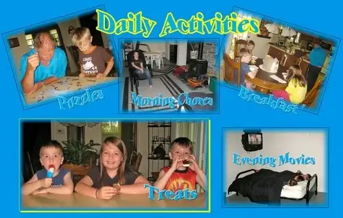

{kind=link}
Now we’ve gotten into somewhat of a routine at home, though I’m afraid it’s not nearly as tidy as what the grandparents were able to pull off. We start our mornings at the indoor pool, where the little boys are taking swimming lessons and loving jumping off the diving board. In the afternoons and early evenings, we’ve been spending lots of time at the pool (the life guards already recognize us, I think), which is our equivalent to the lake. Tennis lessons have begun, and this week, we’ll see our middle child off to camp. Following that, our other daughter will have her week at Grandma’s and Grandpa’s and get to meet up with her cousin from Mississippi.
There’s been a lot of running around, a lot of time in the van going here and there with the kids. I’ve put in some long days. But in the midst of it all, I’ve allowed myself to feel the peace that is so evidently present in my life at the moment. Despite the crazy schedule inherent in our household of seven, I realized several years ago that it was imperative I take care of myself in order to take care of my family. I’ve still found time to exercise and nourish myself in other ways, even with our change in routine.
The peace I feel isn’t a surface kind of peace. There have been days thick with squabbling. Things are always a bit out of sorts at summer’s beginning. The peace I feel is a deep-down-in-my-soul peace, one that tells me a lot of things are very right in my life at the moment. I don’t take this for granted. It hasn’t always been this way, and we never know what tomorrow will bring. But for right now, I feel whole. I love that I’m available to the kids — this feels very right to me. Knowing I’m doing what’s right for my family and for myself is a very good feeling. I know that I am very blessed. My husband and I are both working very hard right now to keep our family thriving, and I know that is a big contributor to this peace as well. My faith, which feels very vital at this point in time, is another factor that can’t be discounted by any means. In fact, without it, all of these other elements would feel very flat indeed.
The kids are healthy, my husband has a good job that he enjoys, we have a roof over our heads, and I am working as well, putting time in the cracks wherever it fits — a wonderful perk to being a freelance writer. No, we don’t have a trip to Disneyworld or anywhere else exotic planned. But we have a firepit out back, and a few small trips to see family and friends planned. Soon, it will be time to gather up school supplies and head into another school year.
But I’m not there yet. I’m still breathing in, deeply, and back out again, content to be just where I am.
What brings you the greatest sense of deep-down peace in the summertime?